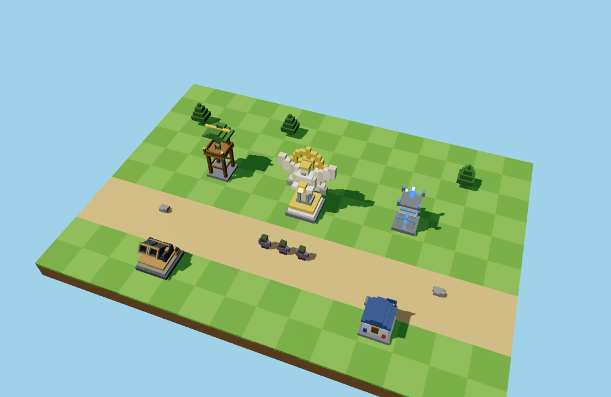
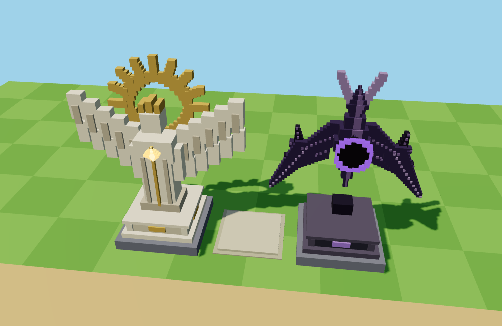
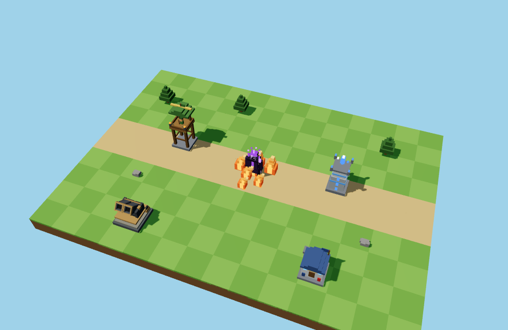
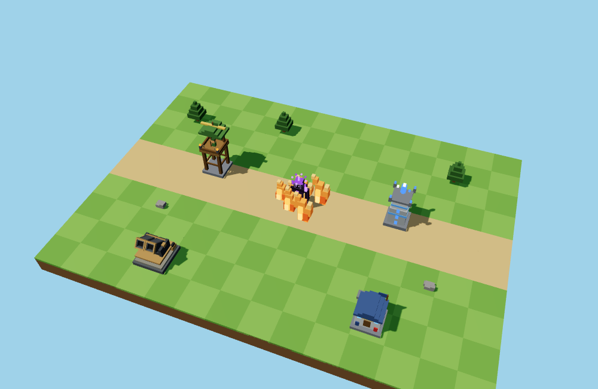

A · Carved guardians
Stone Seraphs
A recognizably angelic statue. Broad wings, a quiet stone body, and a strong sun or eclipse crown.
Raised wings · sun crownHooded face · heavy wings
Preserves the Seraph identity most directly.
Three complete Seraph suites and three fire treatments. Larger blocks, quieter detail, and silhouettes that belong beside the existing towers.
Review candidates · September 13, 2026 · The live art has not been replaced
The cards show both tier-five branches. Expand a suite for all nine forms, or orbit the actual voxel models in 3D.
A recognizably angelic statue. Broad wings, a quiet stone body, and a strong sun or eclipse crown.
Preserves the Seraph identity most directly.
A chapel grows into an open sun temple or an imposing dark gate. Uses the masonry and roof shapes of the existing towers.
The closest match to the other buildings; less of a living idol.
A suspended relic held by broad stone supports. The sunstone opens outward; the dark core sits inside a heavy crown.
The boldest magical silhouette, with fewer decorative parts.
Solar uses pale stone, raised forms and golden crowns. Void uses dark mass, shadowed openings and restrained violet light. Upgrades add a distinct architectural or sculptural feature; fine crystal facets and clouds of trim are removed.

Same tier scale as the game. Every battlefield view uses the same camera distance.
Same tier scale as the game. Every battlefield view uses the same camera distance.
Same tier scale as the game. Every battlefield view uses the same camera distance.

Play each loop to see the motion. These are solid 3D block forms with a small glowing core. The same enemy and lighting appear in every option.
Connected orange tongues with warm cores and leaning, stepped tips.
A balance of recognizable flame height and clear enemy silhouettes.
Fewer, more expressive tongues that split and sway in continuous motion.
The strongest flame silhouette; occupies more space around enemies.
Short flames with a few rising cuboid embers, close to the road surface.
The clearest view of enemies during crowded endless waves.


You can choose different styles for the shared tiers, Solar, and Void. Selections stay local until you queue your feedback.
{kind=link}
{kind=link}
{kind=link}